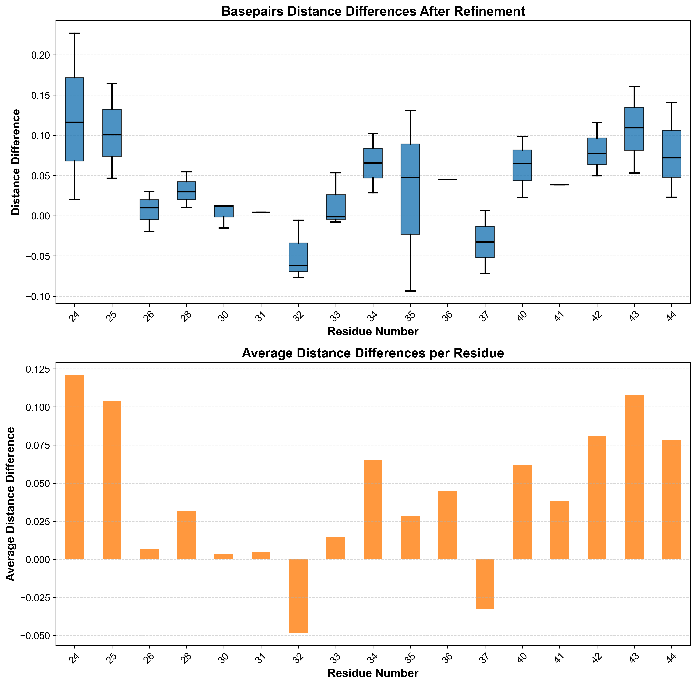

Reading Files
Coordinate Files
Chapi supports the following coordinate file formats:
mmCIF (PDBx/mmCIF)
PDB
SHELXL
MOL file
The read_coordinates() is a function provided by the molecules_container_t class of the chapi module, designed to read files in different format, including mmCIF or PDB format.
Additionally, the function read_pdb() can be used as well to read PDB and mmCIF files.
import chapi
mc = chapi.molecules_container_t(True)
# read PDB file
imol_pdb = mc.read_coordinates("rnase.pdb")
# read mmCIF file
imol_mmcif = mc.read_coordinates("rnase.cif")
MTZ and Map Files
MTZ file format can be read by using the read_mtz() function.
imol_mtz = mc.read_mtz("rnase-1.8-all_refmac1.mtz", "FWT", "PHWT", "W", False, False)
The latest two arguments are:
use_weight(bool): the flag to use the map weightis_a_difference_map(bool): the flag to set the map as a difference map
MRC/CCP4 Maps
EM maps are typically in MRC/CCP4 map format
imol_map = mc.read_ccp4_map("emd_16890.map", False)
The latest argument is is_a_difference_map (bool): the flag to set the map as a difference map
Writing Files
The write_coordinates() and write_map() functions are used to write coordinates files (PDB and mmCIF)
and map files (MTZ and map) respectively.
# read mmCIF file
imol_mmcif = mc.read_coordinates("rnase.cif")
# write mmCIF file
imol_mmcif_new = mc.write_coordinates(imol_mmcif, "rnase-new.cif")
# read MTZ file
imol_mtz = mc.read_mtz("rnase-1.8-all_refmac1.mtz", "FWT", "PHWT", "W", False, False)
# write MTZ file
imol_mtz_new = mc.write_map(imol_mtz, "rnase-1.8-all_refmac1_new.mtz")
# read map file
imol_map = mc.read_ccp4_map("emd_16890.map", False)
# write map file
imol_map_new = mc.write_map(imol_map, "emd_16890_new.map")
Molecular Information
The following functions return information about macromolecular models. For more details see the Chapi Python API - Molecular Information section.
General Information
get_molecule_diameter()get_number_of_atoms()get_number_of_hydrogen_atoms()get_cell()get_symmetry()get_hb_type()
Chains
get_chains_in_model()get_single_letter_codes_for_chain()get_ncs_related_chains()
Residue
get_residue_name()get_residue_names_with_no_dictionary()residues_with_missing_atoms()get_residues_near_residue()
Examples
1. General Information
>>> import chapi
>>> mc = chapi.molecules_container_t(False)
>>> mc.set_use_gemmi(False)
>>> imol = mc.read_pdb("rnase.pdb")
>>> molecule_diameter = mc.get_molecule_diameter(imol)
>>> print("molecule diameter:", round(molecule_diameter))
molecule diameter: 56
>>> number_of_atoms = mc.get_number_of_atoms(imol)
>>> print("number of atoms:", number_of_atoms)
number of atoms: 1465
>>> chains = mc.get_chains_in_model(imol)
>>> print("chains:", chains)
chains: ['A', 'B']
>>> residue45_name = mc.get_residue_name(imol, 'A', 45, '')
>>> print("residue 45 name:", residue45_name)
residue 45 name: PRO
2. Header Info
>>> import chapi
>>> mc = chapi.molecules_container_t(False)
>>> mc.set_use_gemmi(False)
>>> imol = mc.read_pdb("1mcy.pdb")
>>> header_info = mc.get_header_info(imol)
INFO:: There are 8 helices and 0 sheets
Helix info:
------------------------------------------------
1 1 A 4 A 35 32
2 2 A 37 A 42 6
3 3 A 52 A 57 6
4 4 A 59 A 78 20
5 5 A 83 A 95 13
6 6 A 101 A 118 18
7 7 A 120 A 122 3
8 8 A 125 A 149 25
Sheet info:
------------------------------------------------
------------------------------------------------
>>> compound_lines = header_info.compound_lines
>>> journal_lines = header_info.journal_lines
>>> author_lines = header_info.author_lines
>>> for l in author_lines:
print("author_line:", l)
>>> for l in compound_lines:
print("compound_line:", l)
>>> for l in journal_lines:
print("jounal_line:", l)
author_line: T.LI,G.N.PHILLIPS JR.
compound_line: MOL_ID: 1;
compound_line: MOLECULE: MYOGLOBIN (CARBONMONOXY);
compound_line: CHAIN: A;
compound_line: ENGINEERED: YES;
compound_line: MUTATION: YES
jounal_line: AUTH X.ZHAO,K.VYAS,B.D.NGUYEN,K.RAJARATHNAM,G.N.LA MAR,T.LI,
jounal_line: AUTH 2 G.N.PHILLIPS,R.F.EICH,J.S.OLSON,J.LING
jounal_line: TITL A DOUBLE MUTANT OF SPERM WHALE MYOGLOBIN MIMICS THE
jounal_line: TITL 2 STRUCTURE AND FUNCTION OF ELEPHANT MYOGLOBIN.
jounal_line: REF J.BIOL.CHEM. V. 270 20763 1995
jounal_line: REFN ISSN 0021-9258
jounal_line: PMID 7657659
jounal_line: DOI 10.1074/JBC.270.35.20781
Molecular Editing
There are many functions in the API that edit molecules, e.g., adding, deleting and moving the atoms. More functions are documented in the Chapi Python API - Model Manipulation section.
Examples
1. Adding water molecules
import chapi
mc = chapi.molecules_container_t(True)
mc.set_use_gemmi(False)
# read coordinates and map
imol = mc.read_pdb("rnase.pdb")
imol_mtz = mc.read_mtz("rnase-1.8-all_refmac1.mtz", "FWT", "PHWT", "W", False, False)
# set the parameters for waters addition (the default values are given as arguments)
mc.set_add_waters_water_to_protein_distance_lim_min(2.4)
mc.set_add_waters_water_to_protein_distance_lim_max(3.4)
mc.set_add_waters_variance_limit(0.1)
mc.set_add_waters_sigma_cutoff(1.75)
# add waters
mc.add_waters(imol, imol_mtz)
2. Deleting water molecules outliers
import chapi
mc = chapi.molecules_container_t(True)
mc.set_use_gemmi(False)
# read coordinates and map
imol = mc.read_pdb("rnase.pdb")
imol_mtz = mc.read_mtz("rnase-1.8-all_refmac1.mtz", "FWT", "PHWT", "W", False, False)
# delete water "outliers" - e.g., those with a distance to the protein less than 2.5
# or more than 3.5
min_dist = 2.5
max_dist = 3.5
median_temperature_factor = mc.get_median_temperature_factor(imol)
b_factor_limit = 2.0 * median_temperature_factor
outlier_map_rmsd_level = 1.0
ignore_part_occ_contact_flag = False
ignore_zero_occ_flag = False
water_outliers = mc.find_water_baddies(imol,
imol_mtz,
b_factor_limit,
outlier_map_rmsd_level,
min_dist,
max_dist,
ignore_part_occ_contact_flag,
ignore_zero_occ_flag)
for res in water_outliers:
cid = "//" + res.chain_id + "/" + str(res.res_no)
print("Deleting water", cid)
mc.delete_atom_using_cid(imol, cid)
Refinement
Examples
1. Real Space Refinement using Coot
# Read the molecular coordinates and map for 2pwt
imol = mc.read_coordinates("2pwt.pdb")
imol_map = mc.read_ccp4_map("2pwt.ccp4", False)
# Set the refinement map
mc.set_imol_refinement_map(imol_map)
# Add hydrogen atoms to the molecule
add_H_status = mc.add_hydrogen_atoms(imol)
# If hydrogen atoms were successfully added, refine the residues
if add_H_status == 1:
# Import the CIF dictionary for refinement
mc.import_cif_dictionary("/Applications/ccp4-9/lib/data/monomers/l/LHA.cif", imol)
# Refine the residues in the specified range
mc.refine_residues_using_atom_cid(imol, "//B/24-44", "ALL", 10000)
# Delete the hydrogen atoms after refinement
mc.delete_hydrogen_atoms(imol)
# Write the refined coordinates to a new PDB file
mc.write_coordinates(imol, "2pwt_coot_refined.pdb")
2. Refinement using Servalcat
Servalcat supports refinement of structures against X-ray data as well. For more details, see: Yamashita, K., Palmer, C. M., Burnley, T., Murshudov, G. N. (2021) Acta Cryst. D77, 1282-1291 https://servalcat.readthedocs.io/en/latest/overview.html
# Read the coordinates and map for 2pwt
imol = mc.read_pdb("2pwt.pdb")
imol_map = mc.read_ccp4_map("2pwt.ccp4", False)
# Associate mtz file with map
mc.associate_data_mtz_file_with_map(imol_map,"2pwt.mtz" , "FP", "SIGFP", "FREE")
# Refine using servalcat
mc.servalcat_refine_xray(imol, imol_map, "ref1")
The function servalcat_refine_xray_with_keywords() can be used to specify the servalcat keywords.
3. Base pairs Analysis
In this example, we analyse the base pairs distances in 2PWT after refinement with Coot.
The complete script can be downloaded here
import pandas as pd
import numpy as np
desired_atoms = {"O6", "N4", "N1", "N3", "N2", "O2"}
def check_d(pdb_path: str, residue_numbers: list[int], distance_threshold: float = 3.1):
# Read molecular coordinates and maps
imol = mc.read_coordinates(pdb_path)
distances_list = []
for current_residue_res_no in residue_numbers:
current_residue_cid = f"//B/{current_residue_res_no}"
neighbours = mc.get_residues_near_residue(imol,
current_residue_cid,
distance_threshold)
for n in neighbours:
name = mc.get_residue_name(imol, n.chain_id, n.res_no, n.ins_code)
if name == "HOH":
continue # Ignore water molecules
delta_res_no = n.res_no - current_residue_res_no
if np.abs(delta_res_no) == 1:
continue # Ignore adjacent residues
neighbour_cid = f"//{n.chain_id}/{n.res_no}"
distances = mc.get_distances_between_atoms_of_residues(imol,
current_residue_cid,
neighbour_cid,
distance_threshold)
for d in distances:
atom1_name = d.atom_1.atom_name.strip()
atom2_name = d.atom_2.atom_name.strip()
if atom1_name in desired_atoms and atom2_name in desired_atoms:
distance_data = {
"Chain ID1": d.atom_1.chain_id,
"Residue_no1": d.atom_1.res_no,
"Atom1": atom1_name,
"Chain ID2": d.atom_2.chain_id,
"Residue_no2": d.atom_2.res_no,
"Atom2": atom2_name,
"Distance": d.distance
}
distances_list.append(distance_data)
# Return the distances as a pandas DataFrame
return pd.DataFrame(distances_list)
Plotting the differences after refinement

{kind=link}
Ligand
Examples
1. Clark and Labute 2D representation
The Clark and Labute 2D representation is a schematic diagram in which the ligand is displayed in 2D form, and the interactions to and between the residues in its vicinity are summarized in a concise and information-rich manner – Clark, A. H., & Labute, P. (2007). J. Chem. Inf. Model., 47(4), 1937-1948.
import chapi
import os
# Set the COOT_PREFIX environment variable to the installation path of COOT
os.environ["COOT_PREFIX"] = "/opt/homebrew/Cellar/coot/1.1.15"
# Initialize the COOT headless API with a molecules container
mc = chapi.molecules_container_t(True)
# Disable the use of GEMMI library
mc.set_use_gemmi(False)
# Read the coordinates from the PDB file and get the molecule index (imol)
imol = mc.read_coordinates("2vtq.pdb")
# Retrieve the monomer information for the ligand "LZA"
mc.get_monomer("LZA")
# Add hydrogen atoms to the molecule
mc.add_hydrogen_atoms(imol)
# Generate a 2D SVG representation of the ligand environment for LZA
svg = mc.get_svg_for_2d_ligand_environment_view(imol, "//A/1299", True)
# Write the generated SVG to a file
f = open("LZA_2d_ligand_environment.svg", "w")
f.write(svg)
f.close()
{kind=link}